Официальный иллюстрированный каталог панели управления Xray нового поколения: от Forge для сборки конфигов, Autopilot и AmneziaWG до жизненного цикла пользователей, движка уведомлений, white-label, публичного API и полного комплекта установки. Всё — с настоящими скриншотами самой панели.
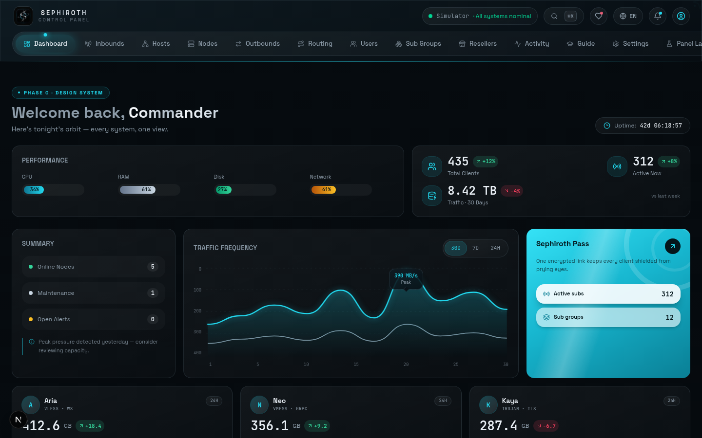
Все изображения в книге — настоящие скриншоты самой панели (v2.6.0; дизайн «обсидиан + стеклянный циан» един во всех 6 темах), без паролей и личных данных.
Sephiroth — полноценная панель управления для Xray: inbound-ы, пользователи и подписки, живая статистика, безопасность и бэкапы — всё в едином процессе Node.js. Ни MySQL, ни Postgres не нужны; данные хранятся в одном атомарном JSON-файле, и интерфейс обслуживается с того же порта.
Sephiroth создан для администраторов личных серверов с точным контролем, для продавцов с реселлерской системой и шлюзами и для self-hosting-любителей, которым нужна красивая, лёгкая панель на своём языке — с телеметрией Socket.IO, палитрой Ctrl+K и полевым справочником.
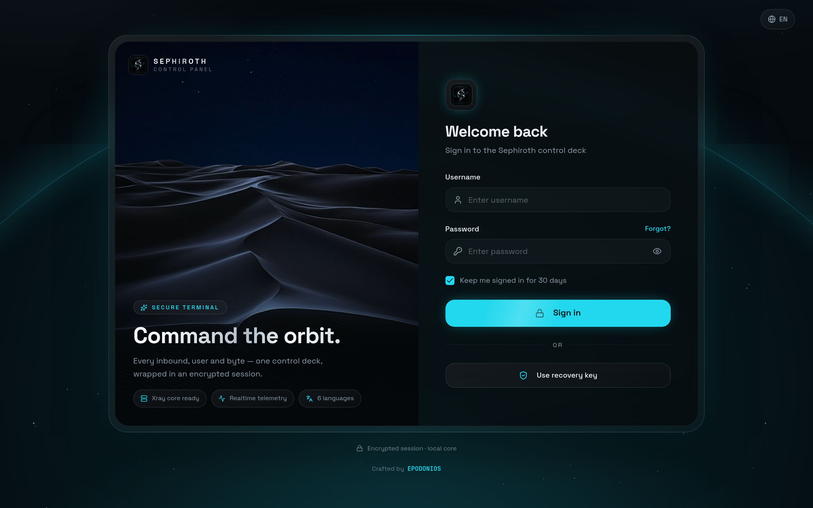
Вся панель — один процесс: сервер Express (REST API) обслуживает тот же порт, на котором работает собранный React-интерфейс (SPA), а Socket.IO рассылает живую телеметрию (CPU/RAM/диск, состояние inbound-ов, события). У сетевого ядра два режима: Симулятор (по умолчанию; безопасный, без бинарников) или реальный драйвер Xray (подробно в разделе 07).
| Способ | Для чего | Примечание |
|---|---|---|
| install.sh одной строкой | Linux VPS/выделенный сервер (Ubuntu/Debian/RHEL/Alpine/Arch) | systemd + CLI sephiroth + случайные порт и пароль |
| Docker / Compose | Docker-серверы и CI | Официальный образ ghcr.io/edsel-rahimi/sephiroth |
| Ручной запуск | Разработка и тесты | node server.ts или бандл server.cjs |
| Хостинг с одним портом | Бесплатные application-хостинги (в духе Pterodactyl) | Бандл без node_modules + порт из SERVER_PORT |
Один порт, один процесс, один файл данных — на всём, где есть Node: от VPS на 512 МБ до контейнера на 308 МБ у бесплатного хостинга.
Forge в Sephiroth комбинирует 13 входящих протоколов, 6 транспортов и 3 уровня безопасности; ссылка подписки, QR, .conf-файл и вывод ядра собираются автоматически.
| Протокол | Характер и применение |
|---|---|
| VLESS | Современный и лёгкий; flow xtls-rprx-vision — золотая пара с REALITY |
| VMess | Классика, работает везде; хорош для CDN и WebSocket |
| Trojan | Маскируется под обычный HTTPS-трафик |
| Shadowsocks | Просто и быстро; SS2022 (2022-blake3) с проверкой длины ключа |
| Hysteria2 | QUIC/UDP для сетей с задержками и потерями — независимый sidecar |
| TUIC | QUIC-туннель с контролем перегрузки BBR — движок sing-box |
| WireGuard | Классический туннель с парой ключей и настраиваемым MTU — sidecar |
| AmneziaWG | WireGuard, устойчивый к цензуре, с параметрами обфускации — следующая страница |
| Mixed | Совмещённый порт HTTP+SOCKS на движке sing-box — идеально для Autopilot |
| MTProto | Нативный прокси Telegram через sidecar mtg (авто-secret) |
| SOCKS5 / HTTP | Локальный прокси с авторизацией; «прокси для Telegram» (раздел 09) |
| Dokodemo-door | Прозрачный порт для перенаправления трафика (скрытая API-дверь ядра) |
У любого TLS-inbound есть fallback (dest/alpn/path) — база пресета «один порт»: несколько протоколов на одном порту + /panel для панели — полное решение для хостов с одним портом.
Всё, что вы собрали в Forge, драйвер ядра (раздел 07) превращает в настоящий конфиг Xray — streamSettings, REALITY, sniffing (http/tls/quic/fakerd), mux и fallbacks без ручной правки JSON.
AmneziaWG — тот же WireGuard с суперсилой: самодельные пакеты и кастомные «магии» рукопожатия делают постоянную подпись WireGuard нечитаемой для DPI. Sephiroth запускает его как sidecar (отдельный процесс рядом с ядром): вы выбираете в Forge протокол amnezia-wg, панель создаёт пару ключей сервера и публичный ключ каждого клиента, берёт параметры обфускации по умолчанию или вручную и выдаёт готовые к запуску .conf-файлы сервера и клиента.
| Параметр | Что означает | По умолчанию |
|---|---|---|
| Jc | Сколько junk-пакетов отправляется перед каждым рукопожатием (шум для DPI) | 4 |
| Jmin / Jmax | Диапазон случайного размера junk-пакетов | 40 / 70 |
| S1 / S2 | Число init/response-пакетов с бессмысленным содержимым | 15 / 60 |
| H1–H4 | Кастомные «магии» рукопожатия (вместо знаменитой подписи WireGuard) | авто |
| MTU | Единица передачи; 1420 по умолчанию для свободного прохода туннеля | 1420 |
На серверах, где awg не установлен, панель продолжает обычную работу и полностью пишет .conf-файлы сервера и клиента; установка awg-quick (или закрепление sidecarAwgBin в API настроек) поднимает тот же конфиг без изменений — а Config Doctor честно предупредит, если два inbound-а WG/AWG используют один приватный ключ.
«Forge» — диалог создания/редактирования inbound-а; умная форма, которая прямо во время ввода собирает ссылку подписки и QR вживую в боковой панели рядом. Порядок работы:
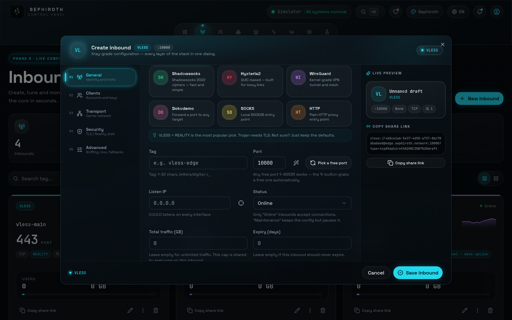
Если не хочется возиться с формой, нажмите один из готовых пресетов в сетке «Быстрого создания»: VLESS + REALITY :443VMess + WS + TLSЛокальный SOCKS5Комбо на одном порту и другие — покажется сводка настроек, подтверждаете — и готово.
Две маленькие кнопки в Forge избавляют от классических бед «ссылка не работает»:
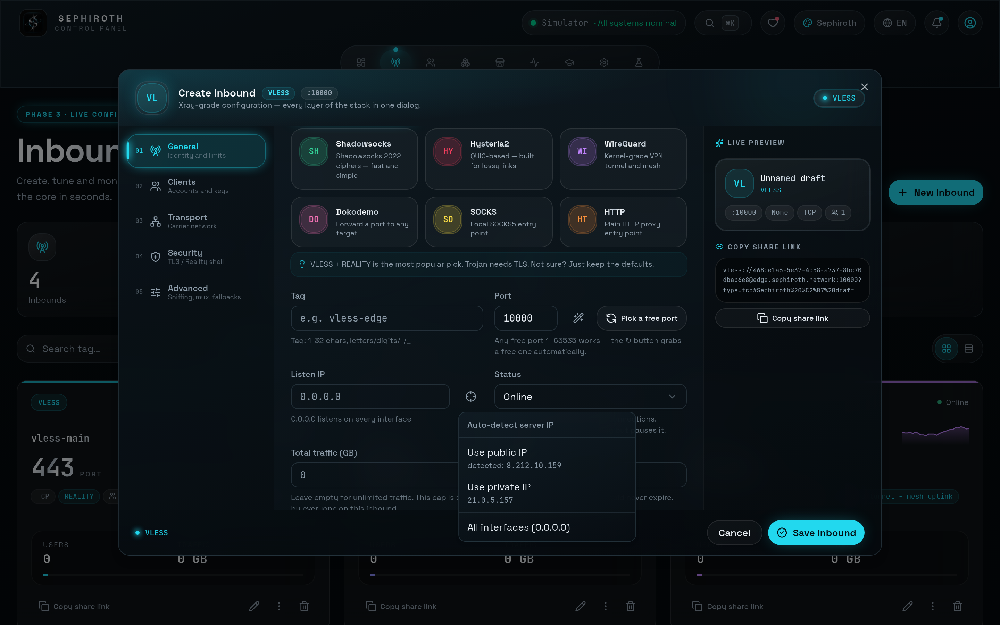
Если вы за CDN или обратным прокси, поставьте «listen» в 0.0.0.0 или приватный IP — в клиентских ссылках окажется только публичный IP/домен; Forge держит эти два понятия раздельно.
Вместо создания inbound-ов по одному мастер Autopilot собирает мультипротокольный флот в три шага — с автоматическим распределением портов, наследованием шаблона и ссылкой подписки на выходе. Кнопка «Autopilot» — рядом с «Новый inbound» во вкладке inbound-ов.
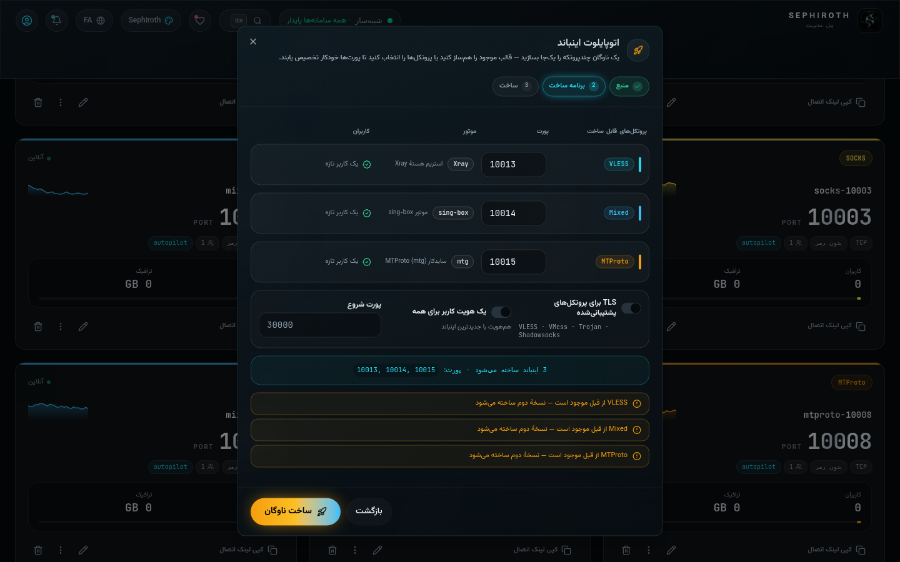
Если протокол падает посреди сборки, созданное откатывается, порты освобождаются; в отчёте ссылка подписки и «вторая ссылка» (.conf AmneziaWG) — в один клик.
Каждый пользователь — настоящий подписчик: квота трафика, день истечения, лимит IP и несколько inbound-ов одновременно. Таблица пользователей показывает живую полосу расхода, статус активен/истёк и умные чипы:
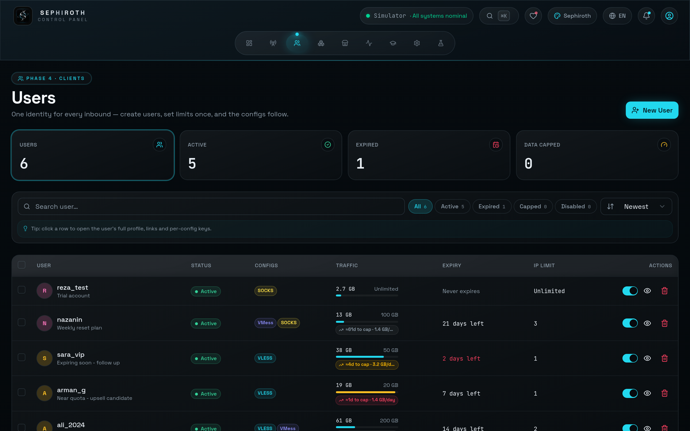
Переключатель «Применять лимит IP» в карточке ядра автоматически отключает превысивших лимит в 10-минутных окнах (выкл = только предупреждение); лимит устройств HWID применяется в портале подписки — 13-е устройство останавливается страницей «Достигнут лимит устройств», админ снимает его кнопкой «Сбросить устройства».
Sephiroth ведёт жизнь подписки как настоящую продажу: аккаунт может не считаться до первого подключения, при истечении — обновить сам себя вместо отключения, а десятки пользователей управляются одним кликом.
| Действие | Эффект | Действие | Эффект |
|---|---|---|---|
| Включить / отключить | Статус аккаунта | Продлить | Целое новое окно от сейчас + обнуление расхода |
| Обнулить трафик | Расход → 0 | В ожидание / из ожидания | Якорь «старт с первого подключения» |
| Автопродление вкл/выкл | Переключатель скользящего окна | Сбросить устройства | Очистка HWID-регистраций |
| Задать лимиты | Дни/объём/IP — пустое поле = не менять | Удалить | С диалогом подтверждения |
Активация ожидающего аккаунта (первое подключение), автопродление, близкое истечение и неудачный вход — всё это события движка уведомлений (раздел 08): колокольчик верхней панели + Telegram админа.
У каждого пользователя своя ссылка подписки: /sub/<subId>. Страница подписки — брендированный «орбитальный пропуск»: полоса расхода, оставшиеся дни и импорт в один клик в популярные приложения. Саб-группы собирают нескольких пользователей за одной ссылкой с паролем. Бренд страницы — имя/логотип/акцентный цвет — автоматически берётся из настроек панели и из профиля каждого реселлера; полный white-label вплоть до подписи в футере.
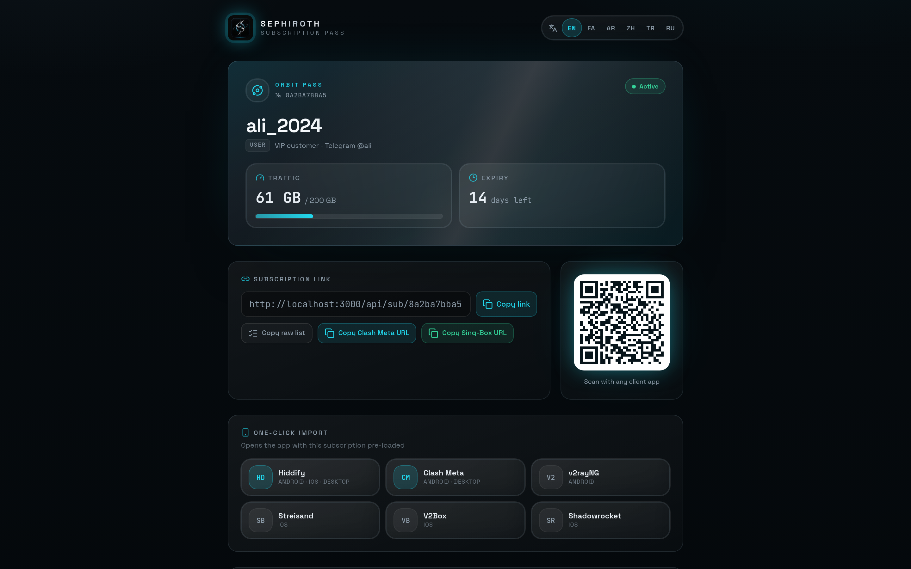
| Формат | Получить через | Подходит для |
|---|---|---|
| Сырой URI (raw) | ?format=raw | Ручное распространение |
| Base64 | ?format=b64 | Большинство v2ray-приложений |
| Clash Meta | ?format=clash | Clash / Mihomo / Verge / Stash |
| Sing-Box | ?format=singbox | Sing-Box 1.10+ / Hiddify / Streisand / V2Box |
| Xray-JSON | ?format=xray | Полный профиль v2ray/xray-core |
Приложение-клиент само называет себя: Clash/Mihomo/Verge/Stash получают вывод YAML, sing-box/Hiddify/V2Box — sing-box, остальные — Base64 — без каких-либо настроек со стороны пользователя.
Config Doctor — уникальная функция Sephiroth: 16-точечное сканирование всей панели, которое находит проблемы раньше пользователей и к каждому случаю даёт «заголовок + пояснение + решение». Балл считается из 100:
score = 100 − 12×опасность − 5×предупреждение − 1×внимание → оценка от A до D
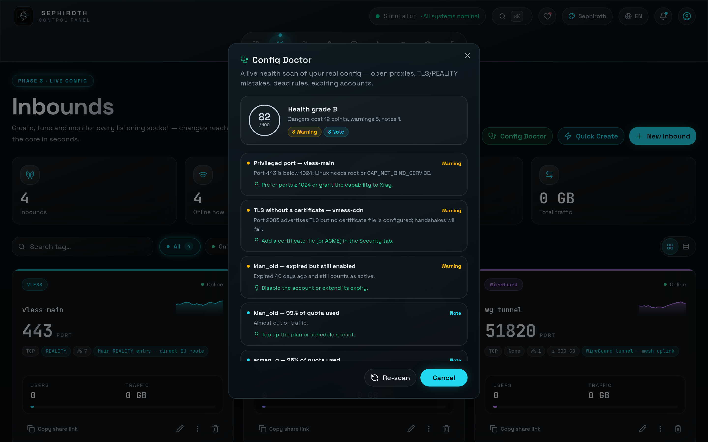
Начиная с v2.4 у Sephiroth два драйвера ядра. По умолчанию — Симулятор (безопасная показательная телеметрия, без бинарников — для любого хостинга, включая заблокированные хосты), а реальный драйвер Xray опционально запускает настоящее ядро:
| Возможность | Симулятор (по умолчанию) | Реальный Xray (opt-in) |
|---|---|---|
| Выполнение протоколов | Симулированная телеметрия | Реальное выполнение — трафик идёт через настоящий порт |
| Статистика per-user | Показательная | Настоящая (дельты stats API; по умолчанию каждые 10 с, настраивается 5–120) |
| Требования | Никаких | Автозагрузка бинарника из релизов XTLS/Xray-core (или ручной путь + пин версии) |
| Валидация конфига | — | xray run -test перед каждым запуском |
| Для кого | Тесты, демо, ограниченный хостинг | Production |
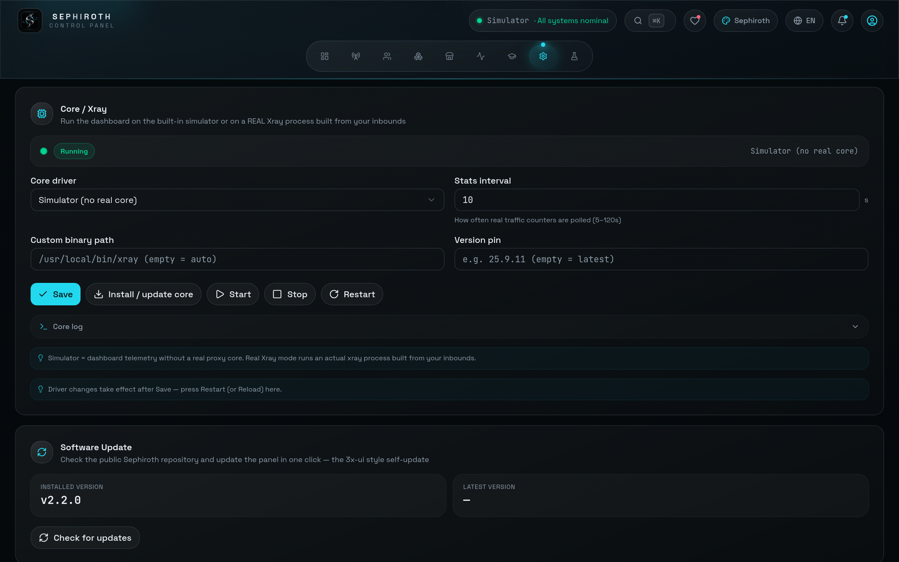
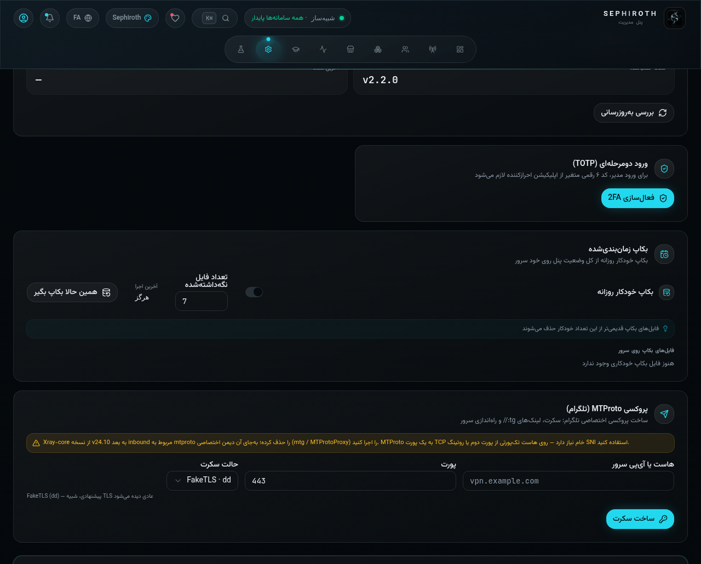
Движок оповещений Sephiroth доставляет события панели — с устранением дубликатов — в два места: колокольчик верхней панели и Telegram-бота админа; у каждого типа события свой переключатель в настройках.
| Событие | Когда происходит |
|---|---|
| Новый / удаление / правка | Каждое создание, удаление и изменение (имя, лимиты…) |
| Истечение / дедлайн | Истечение + предупреждение последних дней (1 пинг в день) |
| Лимит трафика / сброс | Исчерпание квоты и недельный/месячный сброс |
| Активация (ожидание) | Первое подключение «ожидающего» — старт отсчёта подписки |
| Автопродление | Прокрутка окна при истечении + обнуление расхода |
| Неудачный вход | Попытка с IP — 1 оповещение на пользователя+IP за 10 минут |
| Ежедневный отчёт о продажах | Дневной cron: заказы, доход (томаны), новые пользователи — раз в ≥23 ч |
| Система | Бэкап, перезапуск панели, создание/удаление inbound-а |
Оповещения отправляются, только когда бот включён и его режим — не «Консоль»; токен и ID чата админа тоже должны быть заданы — тестовые кнопки проверяют это сразу.
Вечный вопрос «как провести Telegram через блокировки?» решён в самой панели — полным набором инструментов и честными примечаниями:
Когда вы создаёте SOCKS5 inbound в Forge, открывается блок «прокси Telegram»: помимо стандартной ссылки — две нативные Telegram-ссылки + QR: t.me/socks?server=…&port=…&user=…&pass=… и tg://socks?… — пользователь нажимает один раз, и Telegram принимает прокси.
Для более враждебных сетей встроенный инструмент «MTProto-прокси» создаёт настоящий secret: задаёте хост, порт и режим dd (маскировка доменом) или plain, получаете secret + ссылки tg://proxy и t.me/proxy + QR, а готовые команды запуска mtg v2 (Docker) — в той же карточке.
1) SOCKS5 в Telegram без маскировки — виден DPI; в строгих сетях — MTProto. 2) Xray удалил MTProto-inbound в v24.10 — Sephiroth честно даёт sidecar mtg (раздел 03) и генератор secret.
У бота три режима: Консоль, Уведомления и Магазин — продажа прямо в Telegram: пользователь выбирает язык и шаблон продажи, платит через ZarinPal или чеком card-to-card, админ подтверждает в чате — заказ мгновенно проходит провижининг, ссылка /sub/ доставляется автоматически.
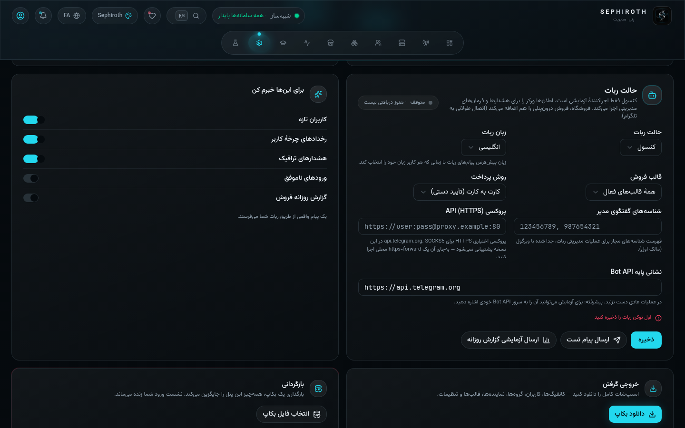
Sephiroth — единственная панель в списках сравнения с полноценной реселлерской системой — тем, чего нет у 3x-ui/Marzban/Remnawave:
Готовые пакеты («Starter 50G», «Pro 200G», …) появляются в диалоге создания пользователя чипами в один клик и разом заполняют квоту/срок/лимит IP — продавцы собирают правильный пакет, не думая о числах.
| Шлюз | Тип подключения |
|---|---|
| ZarinPal / IDPay | Вебхук — автопополнение квоты реселлера |
| Крипто USDT (TRC20) | Крипто-оплата настраивается в самой панели |
| Карта-карта через Telegram | Оплата с карты на карту через Telegram |
Чипы «≈N дней до лимита» значимы и для реселлеров: до того, как у подписчика кончится квота, вы знаете, какие аккаунты завтра захотят продления — счёт готовится до отключения.
Вся панель программируется снаружи: пространство имён /api/v1 с bearer-токенами seph_…, спецификация OpenAPI 3.1 на /api/openapi.json и Swagger UI на /api-docs — Authorize с токеном, и тестируйте прямо со страницы.
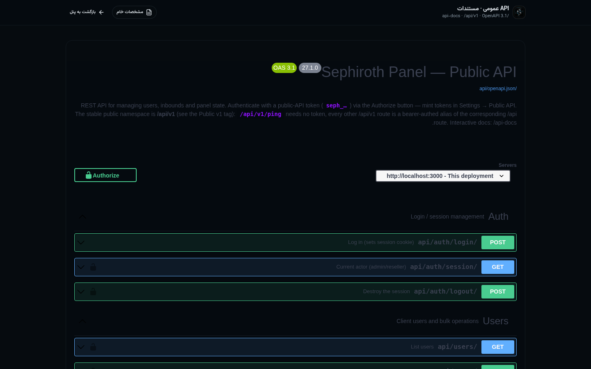
| Группа | Маршруты |
|---|---|
| Ping (без токена) | GET /api/v1/ping |
| Пользователи | /api/v1/users CRUD + bulk (11 действий) + bulk-create + import/export + ip-usage + reset-devices |
| Inbound-ы | /api/v1/inbounds CRUD для 13 протоколов + autopilot (clone/multi) |
| Система | /api/v1/system/server-info · core-status |
| Активность | /api/v1/activity |
На любом Linux-сервере (Debian/Ubuntu/RHEL/Alpine/Arch, x86_64 и arm64) — всего одна строка:
# Интерактивная установка (спрашивает порт/логин/пароль) bash <(curl -Ls https://raw.githubusercontent.com/Edsel-Rahimi/sephiroth/main/install.sh) # Установка с зафиксированной версией bash <(curl -Ls https://raw.githubusercontent.com/Edsel-Rahimi/sephiroth/main/install.sh) v2.6.0 # Установка без вопросов (CI/скрипты) — вывод: /etc/sephiroth/install-result.env SEPH_NONINTERACTIVE=1 bash install.sh
Что создаёт скрипт?
$ sephiroth ← интерактивное меню 1. Start 6. Logs (follow) 2. Stop 7. Logs (last 100) 3. Restart 8. Change Admin Password 4. Force Restart 9. Change Panel Port 5. Status 10. Backup Now 0. Exit 11. Restore Backup 12. Check for Update 13. Update Panel 14. Uninstall # или напрямую: sephiroth start|stop|restart|status|logs|backup|update …
Смена пароля/порта идёт через модуль maint (scrypt-хэш в собственном формате панели), бэкап/восстановление совпадает по формату с бэкапами внутри панели, а «проверка обновлений» сравнивает версию с package.json публичного репозитория.
Официальный многоступенчатый образ собирается на node:22-alpine: первая ступень — сборка SPA + esbuild, вторая — только server.cjs + dist/ — без исходников и без node_modules. Встроенный healthcheck стучится в /api/auth/session, а том /app/db сохраняет данные.
# Самый быстрый путь docker run -d --name sephiroth -p 3000:3000 -v sephiroth_data:/app/db \ ghcr.io/edsel-rahimi/sephiroth:latest # docker-compose.yml services: sephiroth: image: ghcr.io/edsel-rahimi/sephiroth:latest # или пин версии: :v2.6.0 ports: [ "${SEPH_PORT:-3000}:3000" ] environment: SEPHIROTH_ADMIN_USER: ${SEPHIROTH_ADMIN_USER:-admin} SEPHIROTH_ADMIN_PASS: ${SEPHIROTH_ADMIN_PASS:-sephiroth} # смените после первого входа! SEPH_COOKIE_SECURE: auto volumes: [ sephiroth_data:/app/db ]
Теги автоматически собираются на GitHub Actions и пушатся в GHCR: latest для main и теги семантических версий (v2.6.0) — в production рекомендуется пиновать версию. Логин/пароль из переменных окружения засеиваются только при первом запуске с пустыми данными; дальше меняйте их только из панели или CLI.
1) Смените пароль по умолчанию (Профиль → Безопасность). 2) Сохраните ключ восстановления в надёжном месте. 3) Включите 2FA. 4) Сделайте ручной бэкап, чтобы один раз потренировать восстановление. 5) В production включите реальный драйвер Xray в карточке «Ядро».
Интерфейс панели, портал подписки, Toast-уведомления, диалоги и даже тексты Config Doctor переведены на 6 языков с полным паритетом (автопроверка: ноль пропавших ключей и ноль расхождений placeholder во всех 6 языках):
| Язык | Код | Направление | Примечание |
|---|---|---|---|
| Персидский | fa | RTL | Стандартные полупробелы (ZWNJ) и персидские цифры |
| Арабский | ar | RTL | Единая терминология («точки входа», «распределитель»…) |
| English | en | LTR | Эталонный язык |
| 中文 | zh | LTR | Полноширинные скобки и естественный китайский слог |
| Türkçe | tr | LTR | Единая терминология (Giriş / Sorgula…) |
| Русский | ru | LTR | Адаптированная техническая терминология |
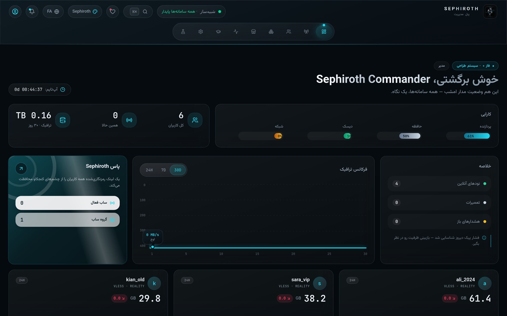
Направление страницы внедряется в корень через Radix DirectionProvider — то есть диалоги, выпадающие списки, подсказки и даже Toast-ы зеркалятся. Технические числа (порты, версии, ссылки) остаются внутри блоков dir=ltr, чтобы оставаться читаемыми.
Все 13 видов панели переработаны и для ширины 390 пикселей: таблицы превращаются в стопки карточек, верхняя панель сворачивается, а большие диалоги (как Forge) переходят на вертикальную прокрутку с полями во всю ширину — в обеих направлениях LTR и RTL, без горизонтального переполнения (проверено автоматическим аудитом раскладки).
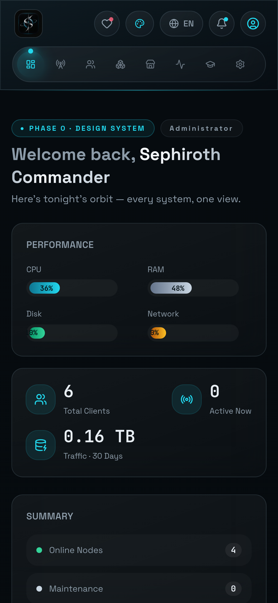
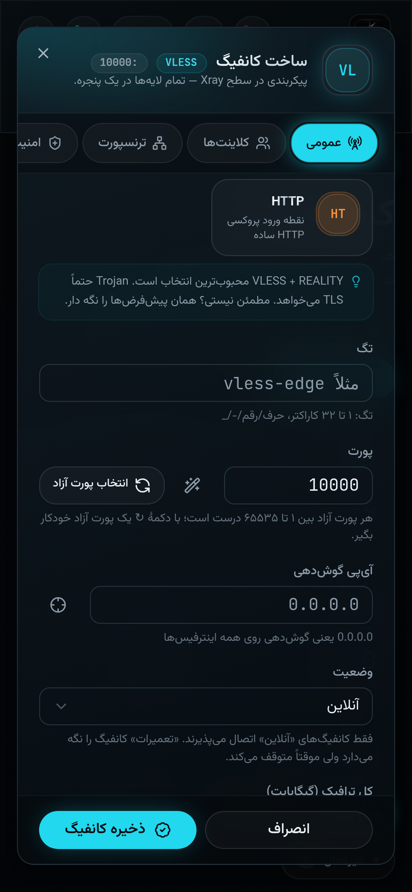
| Вопрос | Короткий ответ |
|---|---|
| Получаю «порт занят» | Нажмите кнопку-волшебную палочку ✦ в Forge — предложится первый свободный порт; для ручной проверки: ss -tlnp | grep <port> |
| Загрузка бинарника Xray не удаётся | Задайте путь к бинарнику вручную или запиньте версию в карточке «Ядро»; до тех пор панель продолжает обычную работу на Симуляторе. |
| Цифры трафика Симулятора отличаются от реальных? | Да — телеметрия Симулятора показательная. Настоящая статистика per-user приходит только от реального драйвера Xray (раздел 07). |
| Забыл пароль администратора | На сервере: sephiroth → пункт 8 (смена пароля); или используйте «ключ восстановления» на экране входа. |
| Как восстановить бэкап? | Настройки → Восстановление → JSON-файл + подтверждение RESTORE; или на сервере: sephiroth → пункт 11. Восстановление выполняется одной транзакцией, аккаунт администратора остаётся нетронутым. |
| Как включить HTTPS? | Поставьте обратный прокси (Nginx/Caddy) с TLS; у защищённой куки есть режим auto, и через x-forwarded-proto она сама становится Secure. |
| Есть только один порт (бесплатный хостинг) | Соберите пресет «Комбо на одном порту» (раздел 03): несколько протоколов с fallback на одном порту + панель на /panel. |
| После изменения панель всё ещё работает на старом коде | Это нормально — внутрипанельное обновление ждёт «перезапуска», чтобы не рвать сессии; нажмите кнопку перезапуска. |
| Не поднимается inbound AmneziaWG | Бинарника awg нет на сервере; панель и так пишет оба .conf. awg-quick или путь в sidecarAwgBin поднимает тот же конфиг. |
| Не приходит дневной отчёт о продажах | Включите в Настройки → Telegram-бот, задайте токен + ID чата админа; «Отправить тестовый дневной отчёт» отправляет его сразу. |
sephiroth logs — лог сервиса · sephiroth status — состояние · живой лог ядра в карточке «Ядро / Xray» · отчёт Config Doctor, чтобы почистить конфиг · лента «События», чтобы видеть, кто что сделал.
✓ Forge с REALITY и живым предпросмотром · ✓ Config Doctor · ✓ Реальный драйвер Xray + sing-box · ✓ 2FA (TOTP) · ✓ Бэкап по расписанию · ✓ Внутрипанельное обновление · ✓ Магазин Telegram (ZarinPal / card-to-card) · ✓ Мульти-нод флот · ✓ Выпуск ACME внутри панели · ✓ Autopilot · ✓ AmneziaWG (sidecar) · ✓ Ожидание + автопродление · ✓ Движок уведомлений + колокольчик · ✓ White-label панели/реселлера · ✓ 11 массовых операций · ✓ Публичный API /api/v1 + Swagger · ✓ 5 форматов подписки + брендированный портал · ✓ 6 тем · 6 языков (RTL) · ✓ Комплект установки · ✓ Автоопределение IP/свободного порта
Sephiroth — проект с открытым кодом под лицензией MIT — форкайте, меняйте и используйте в своих проектах. Если он был вам полезен, поддержите нас кнопкой «Поддержать Sephiroth» внутри панели или звёздой на GitHub.
Дисклеймер: панель публикуется для личного и учебного использования; ответственность за любое ненадлежащее использование — на пользователе. Все изображения каталога сняты с реальной версии v2.6.0 и не содержат личных данных.
Сделано с ♥ автором Edsel-Rahimi · github.com/Edsel-Rahimi/sephiroth